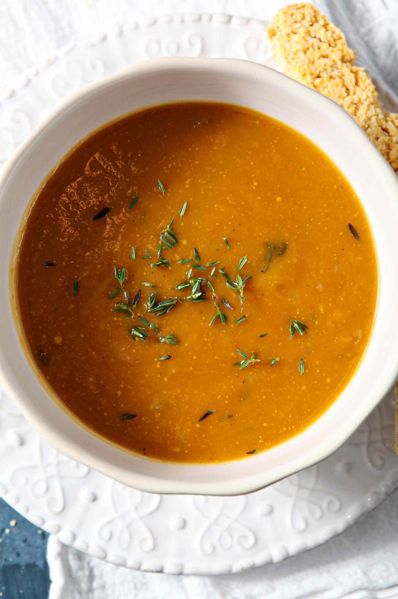

Sweet Potato Bisque

Description
A creamy soup that's perfect for the colder months.
Ingredients
- 2 medium red onions, diced
- 2 tablespoons butter
- 2 teaspoons minced garlic
- 6 cups water
- 5-6 sweet potatoes, diced 1/2-inch pieces
- 1 1/4 cup frozen corn
- 3 1/3 tablespoons vegetable base (Better Than Bouillon)
- 1 stick cinnamon
- 2 pinches dried thyme
- 1 1/2 - 2 teaspoons salt (to taste)
- 1/2 teaspoon black pepper
- 2 bay leaves
- 3/4 - 1 cup heavy cream
- 2 tablespoons parsley
Directions
- In large pot, saute red onions, butter, and minced garlic for 5-10 minutes.
- Add all remaining ingredients except heavy cream and parsley.
- Bring to a boil, then reduce heat to medium-low and simmer for 45 minutes, or until sweet potatoes are tender.
- Remove bay leaves and cinnamon stick, then puree soup using an immersion blender.
- stir in heavy cream and parsley, and season to taste.
- Serving suggestion: Top with crumbled bacon, and pair with a grilled cheese sandwich for dipping.